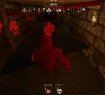
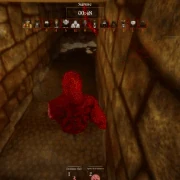

Vapor is a muscular, demonic figure that resembles a humanoid being. Vapor lacks their left arm and entire lower body. He is a monster who originates from the first Pillar Chase. He is directly inspired by the main antagonist of the Horror Shooter game, Vapour. He is introduced as the very first monster in Pillar Chase 2 and is completely free from the very beginning along with the other starter characters, Rosemary, and Baldi.
|  When pressing 1 Vapor will teleport to where his dark sphere is. |
 When pressing 2 Vapor stays still, and sends out a Spider Skull that is constantly highlighted. |